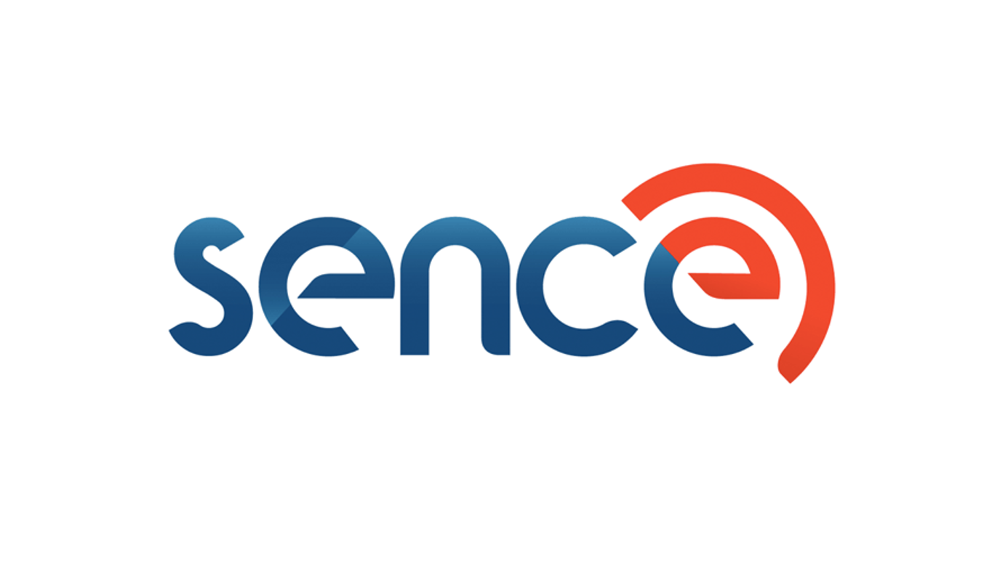
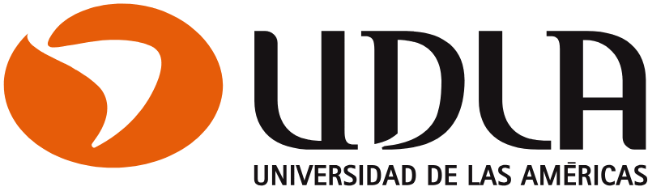

Operaciones de Capacitación & Transformación Digital
"Diseño y lidero programas formativos que aceleran la productividad empresarial, blindando la gestión operativa con un enfoque avanzado en ciberseguridad."
Con más de 6 años de trayectoria comprobada, me especializo en la dirección, diseño y ejecución de programas de capacitación bajo la estricta norma de calidad NCH2728:2015. Mi enfoque no solo busca transmitir conocimiento, sino transformar de raíz las capacidades de las organizaciones: he liderado con éxito proyectos de upskilling que han incrementado la productividad de los equipos en un 25%.
Creo firmemente que la educación corporativa moderna debe ser tecnológica, ágil y, sobre todo, segura. Por ello, integro plataformas LMS (Moodle), simuladores avanzados y herramientas digitales de última generación, complementando la gestión operativa con conocimientos sólidos en ciberseguridad aplicada. Esto me permite aportar una visión integral and estratégica única para empresas que se encuentran en pleno proceso de transformación digital.
"Organizaciones con las que he colaborado:":


¿Necesitas liderar la ejecución de planes formativos bajo estándares de calidad, optimizar la administración de tus plataformas LMS o potenciar el talento de tu organización de forma segura? ¡Hablemos!
También puedes encontrarme en mis plataformas profesionales: